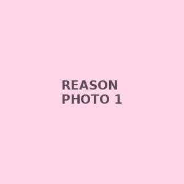
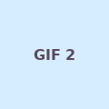
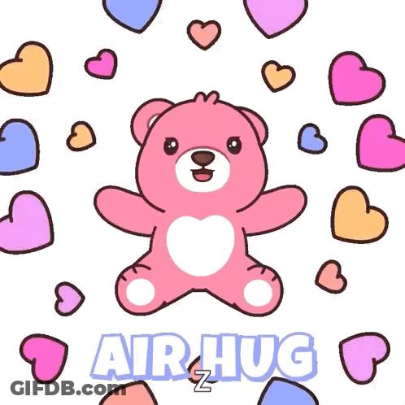

100 reasons why i love you 💙
tap a photo to see it bigger — scroll pauses itself while you read





- Because you make my ordinary days feel special. 💗
- Because your smile can instantly make me happy. 🎀
- Because you understand me even when I don't say much.
- Because talking to you never feels boring.
- Because you make me look forward to every new day.
- Because your little things mean a lot to me.
- Because you know how to make me smile without even trying.
- Because you are genuinely special to me.
- Because every conversation with you becomes a memory.
- Because you make my world a little brighter. ✨
- Because I love the way you care about the people you love.
- Because your presence makes everything feel better.
- Because you are one of the most precious parts of my life.
- Because your laugh is impossible not to love.
- Because you can turn a bad mood into a good one.
- Because you make me feel understood.
- Because I can be myself around you.
- Because you make even simple conversations memorable.
- Because you always give me something to smile about.
- Because you are my favourite person to talk to. 💕
- Because you make me feel lucky.
- Because your happiness matters to me.
- Because you have such a beautiful heart.
- Because your little reactions are adorable.
- Because you bring so much warmth into my life.
- Because I love hearing your thoughts.
- Because you make me feel comfortable being myself.
- Because you make boring moments fun.
- Because you are always on my mind in the sweetest way.
- Because you make memories feel more beautiful.
- Because your name, Nagmaa, has become so special to me. 💗
- Because “Nagmu” is one of my favourite names to say.
- Because you have your own little way of making me happy.
- Because you make me smile at my phone.
- Because I love the way you express yourself.
- Because your presence feels comforting.
- Because you make every little moment count.
- Because you are someone I genuinely care about.
- Because you make my days more interesting.
- Because you always manage to leave a smile on my face.
- Because your happiness brings happiness to me too.
- Because I love our random conversations.
- Because even silence with you feels comfortable.
- Because you make me feel appreciated.
- Because you are wonderfully yourself.
- Because your little habits are cute.
- Because you make me laugh when I least expect it.
- Because you are someone I never want to take for granted.
- Because you make every memory a little sweeter.
- Because you have a way of making everything feel okay.
- Because you are there during the little moments that matter.
- Because I love seeing you happy.
- Because your kindness makes you even more special.
- Because you make me feel heard.
- Because you make conversations feel effortless.
- Because you have a beautiful personality.
- Because you make my heart feel warm.
- Because I love all our silly moments.
- Because you can make me forget about a stressful day.
- Because you are simply irreplaceable to me. 💕
- Because every photo with you becomes a favourite memory.
- Because I love remembering the moments we've shared.
- Because you make me excited for future memories.
- Because you make even small celebrations feel meaningful.
- Because you make me smile without even knowing it.
- Because you are someone I can genuinely trust.
- Because your words can brighten my entire day.
- Because you make life feel a little more colourful.
- Because you are one of my favourite reasons to smile.
- Because you make being happy feel easy. ✨
- Because I love your cute little expressions.
- Because you always manage to surprise me.
- Because your personality is impossible to forget.
- Because you make my favourite memories even better.
- Because I love the way you care.
- Because you make me feel special in your own way.
- Because you bring positive energy into my life.
- Because I can talk to you about the most random things.
- Because you make every chat worth remembering.
- Because you are my favourite kind of chaos. 🎀
- Because you make me laugh at the most unexpected times.
- Because you make simple moments feel magical.
- Because your smile deserves a million compliments.
- Because I love how uniquely you are you.
- Because you make me want to create more memories.
- Because you make my days feel less ordinary.
- Because you are someone I genuinely cherish.
- Because your little messages can make my whole day better.
- Because you make every moment feel a little more special.
- Because you are my very special Nagmu. 💗
- Because you deserve to know how important you are.
- Because you make happiness feel contagious.
- Because I love the memories we've already made.
- Because I look forward to making many more memories.
- Because you make my world feel warmer.
- Because you are beautiful inside and out.
- Because you have a way of making people feel cared for.
- Because you make me grateful for the little things.
- Because you are one of the sweetest parts of my life.
- Because you are Nagmaa, and there is only one you. 💖
- Because your smile is one of my favourite sights.
- Because you make every day a little happier.
- Because you make me appreciate the present moments.
- Because I love all the tiny memories connected to you.
- Because you make my life more memorable.
- Because you are someone truly worth celebrating.
- Because you make me smile just by being yourself.
- Because I never want to forget the beautiful moments we've shared.
- Because you make my life feel a little more complete.
- Because you are simply you — and that's more than enough. 💕